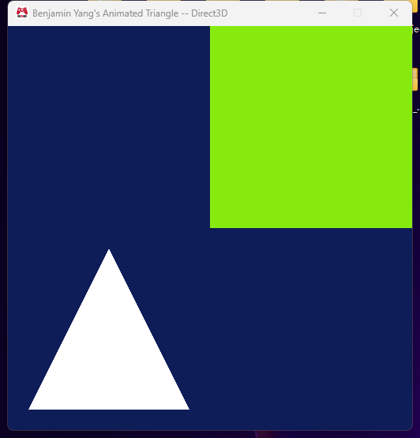
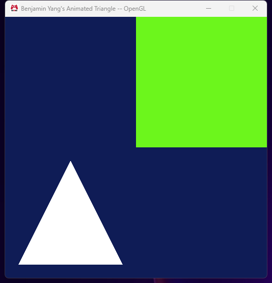
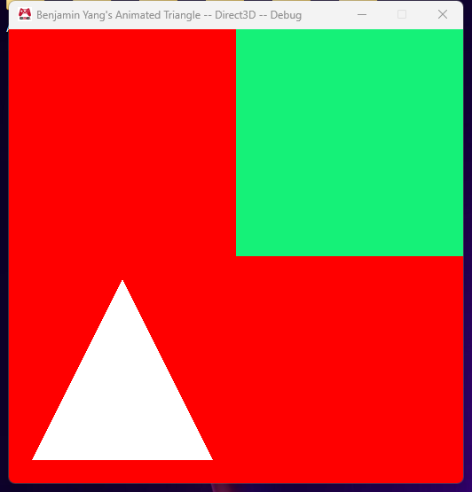

Assignment 03
A platform-independent Graphics.cpp, index buffers, and two objects with two effects
MyGame.exe. ESC closes the game.
Screenshot


How Graphics.cpp became platform-independent
After Assignment 02 the only things left in Graphics.d3d.cpp / Graphics.gl.cpp that were different were: creating the render target view and depth stencil view (Direct3D only), clearing the back buffer and depth buffer, and presenting the frame. All three are about "the screen", so I put them behind one more class:
cView (Engine/Graphics/cView.h, Direct3D/cView.d3d.cpp, OpenGL/cView.gl.cpp)
void Clear( float r, float g, float b, float a = 1.0f ) const; // color + depth
void Present() const;
cResult Initialize( const sInitializationParameters& );
cResult CleanUp();The interface is declared in cView.h next to the other Graphics classes (cMesh, cEffect, cShader, ...). The two implementations sit where the platform-specific code example says they should, Engine/Graphics/Direct3D/cView.d3d.cpp (excluded from the Win32 configurations) and Engine/Graphics/OpenGL/cView.gl.cpp (excluded from x64), in the Direct3D and OpenGL filters. The Direct3D version owns the two views and does what InitializeViews() used to do; the OpenGL version has no data at all because the context already gives it the default framebuffer, so Initialize()/CleanUp() just return success and Clear()/Present() wrap glClear and SwapBuffers.
I did not need to touch sContext: sInitializationParameters is still the struct from Assignment 01 and cView::Initialize() takes it as-is, so Graphics.cpp just passes it through and never looks inside it. With that, Graphics.cpp only includes the platform-independent headers (cView.h, cMesh.h, cEffect.h, cConstantBuffer.h, sContext.h ...) and has no #if defined( EAE6320_PLATFORM_... ) anywhere. Graphics.h is unchanged; its only platform macros are the ones inside sInitializationParameters that were already there. Graphics.d3d.cpp and Graphics.gl.cpp are removed from the project and deleted.
The code in Graphics.cpp that clears the back buffer:
// Every frame an entirely new image will be created.
// Before drawing anything, then, the previous image will be erased
// by "clearing" the color buffer (filling it with a solid color) and the depth buffer
{
// The background slowly drifts between dark blue and teal
// (the simulation time that the application submitted drives the animation)
const auto t = dataRequiredToRenderFrame->constantData_frame.g_elapsedSecondCount_simulationTime;
const float red = 0.15f + 0.10f * std::sin( t * 0.7f );
const float green = 0.25f + 0.15f * std::sin( t * 0.5f + 2.0f );
const float blue = 0.40f + 0.15f * std::sin( t * 0.3f + 4.0f );
s_view.Clear( red, green, blue );
}Alpha is optional and defaults to 1. To check that the color really goes through the interface I temporarily replaced the call with s_view.Clear( 1.0f, 0.0f, 0.0f );:

Effects
Effect initialization in Graphics.cpp:
if ( !( result = s_effect_animatedColor.Initialize( "data/Shaders/Vertex/standard.shader",
"data/Shaders/Fragment/animatedColor.shader", renderStateBits ) ) )
{
EAE6320_ASSERTF( false, "Can't initialize the animated color effect" );
return result;
}
if ( !( result = s_effect_white.Initialize( "data/Shaders/Vertex/standard.shader",
"data/Shaders/Fragment/standard.shader", renderStateBits ) ) )
{
EAE6320_ASSERTF( false, "Can't initialize the white effect" );
return result;
}The caller gives three things: the path of the built vertex shader, the path of the built fragment shader, and the render state bits (built with the RenderStates::Enable.../Disable... helpers). That is all an effect needs; loading the two cShader objects, creating the cRenderState and, on OpenGL, creating and linking the program all happen inside cEffect::Initialize(), and the shared part of that is in the platform-independent cEffect.cpp. The second effect only differs in the fragment shader path, and I added Shaders/Fragment/standard.shader to AssetsToBuild.lua so the standard shader gets built for MyGame too.
Memory (checked with sizeof() in a Debug build on both platforms):
| Direct3D (x64) | OpenGL (x86) | |
|---|---|---|
| sizeof(cEffect) | 48 bytes | 16 bytes |
cShader* m_vertexShader = nullptr;
cShader* m_fragmentShader = nullptr;
cRenderState m_renderState;
#if defined( EAE6320_PLATFORM_GL )
GLuint m_programId = 0;
#endifOn x64 the two pointers are 8 bytes each and cRenderState is 32 bytes (three Direct3D state object pointers plus the 1 byte of bits, padded to 8), so 16 + 32 = 48. On x86 pointers are 4 bytes, cRenderState is just the 1 byte of bits, and there is the 4 byte GLuint program id: 4 + 4 + 1 + 4 = 13, padded to 16 because the largest member needs 4 byte alignment. So the difference is mostly pointer size, and on Direct3D the render state is heavier because it is three real API objects instead of a few flags.
Could it be smaller? The cRenderState could be held as a pointer to a shared object (many effects use the same state) which would bring Direct3D down to 24 bytes, and on OpenGL the two cShader pointers are not needed after the program is linked, so in theory an OpenGL effect could be just the program id and the state bits (8 bytes). I kept the shader pointers because cShader is reference counted and the effect has to release them in CleanUp(), and because keeping the same members on both platforms keeps cEffect.cpp platform-independent. So 48 / 16 is not the absolute minimum, but everything in there is something the effect uses to bind or to clean up.
Meshes
Mesh initialization in Graphics.cpp:
// Rectangle in the upper-right quarter of the screen
{
constexpr eae6320::Graphics::VertexFormats::sVertex_mesh vertexData[] =
{
{ 0.0f, 0.0f, 0.0f }, // 0: lower left
{ 1.0f, 0.0f, 0.0f }, // 1: lower right
{ 1.0f, 1.0f, 0.0f }, // 2: upper right
{ 0.0f, 1.0f, 0.0f }, // 3: upper left
};
constexpr uint16_t indexData[] =
{
0, 1, 2,
0, 2, 3,
};
if ( !( result = s_mesh_rectangle.Initialize( vertexData, static_cast<uint16_t>( std::size( vertexData ) ),
indexData, static_cast<unsigned int>( std::size( indexData ) ) ) ) )
{
EAE6320_ASSERTF( false, "Can't initialize the rectangle mesh" );
return result;
}
}The caller gives the vertex array and its count, and the index array (uint16_t, three per triangle) and its count. The convention is written at the top of cMesh.h and in the parameter name (i_indexData_counterClockwise): every triangle is listed counter-clockwise, which is the right-handed / OpenGL order. The caller never thinks about which platform it is on. The OpenGL implementation uploads the indices as they are; the Direct3D implementation makes a temporary copy in which the second and third index of every triangle are swapped (0,1,2 becomes 0,2,1), creates the index buffer from that and throws the copy away. The vertex data is the same on both platforms, only the index order changes, so with the rectangle only 4 vertices are stored instead of 6.
| Direct3D (x64) | OpenGL (x86) | |
|---|---|---|
| sizeof(cMesh) | 32 bytes | 16 bytes |
#if defined( EAE6320_PLATFORM_D3D )
ID3D11Buffer* m_vertexBuffer = nullptr;
ID3D11Buffer* m_indexBuffer = nullptr;
cVertexFormat* m_vertexFormat = nullptr;
#elif defined( EAE6320_PLATFORM_GL )
GLuint m_vertexArrayId = 0;
GLuint m_vertexBufferId = 0;
GLuint m_indexBufferId = 0;
#endif
unsigned int m_indexCount = 0;Direct3D: three 8 byte pointers plus a 4 byte count = 28, padded to 32. OpenGL: four 4 byte values = 16, no padding. The vertex count, the vertex data and the index data are not stored; they are only needed while creating the buffers, and after that the GPU has its own copy. The one thing I did not have in Assignment 02 and needed now is the index count, because DrawIndexed()/glDrawElements() need it and it depends on what the mesh was initialized with.
Could it be smaller? On Direct3D the vertex format pointer could go away if every mesh used one shared cVertexFormat owned by Graphics.cpp (8 bytes saved, 24 total, which would even fit without padding). The index count could be a uint16_t if I limited meshes to 65535 indices, which would save nothing on OpenGL (still 16 with padding) and nothing on Direct3D either unless the pointer was also removed. On OpenGL the vertex and index buffer ids are only needed in CleanUp(), since the vertex array object remembers them for drawing; they could be deleted right after the vertex array is set up, which would bring an OpenGL mesh down to 8 bytes. I left them in so that CleanUp() is explicit and the buffers are deleted at a known time.
Notes
- Both meshes use the same vertex shader and the same render state; only the fragment shader differs between the two effects. Rendering is bind effect 1, draw the rectangle, bind effect 2, draw the triangle.
- All four configurations build from scratch with no warnings, and the two platforms produce the same picture.